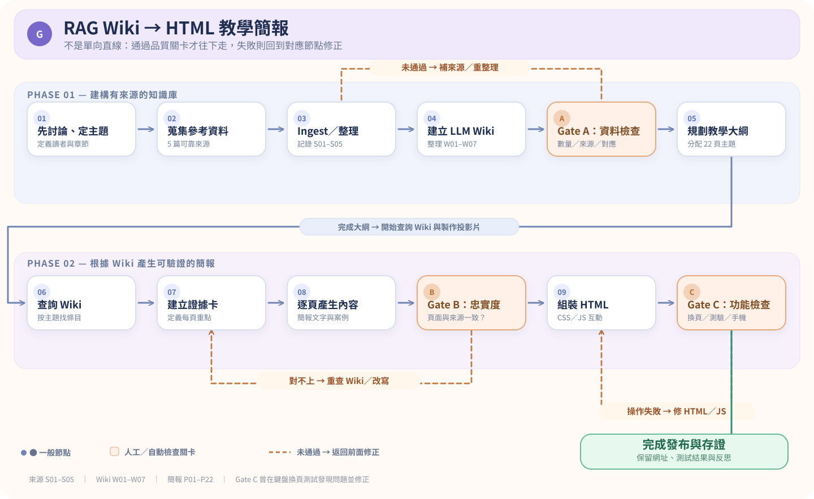

來源與 Wiki 檢查
建立 Wiki 之後、生成簡報之前確認是否真的整理了至少五篇來源，以及 Wiki 條目能否追溯到對應資料。
- 來源 S01–S05 是否完整？
- Wiki W01–W07 的來源 ID 是否存在？
- 關鍵內容是否有足夠依據？
未通過 → 返回資料蒐集 / Ingest
我們不是把五篇資料丟給 AI 就直接產生 22 張投影片。流程分為「建立 Wiki」與「使用 Wiki 生成簡報」兩大階段，透過三道檢查關卡決定前進或返回修正。

桌面可完整閱讀；手機請左右滑動查看。橘色虛線 = 未通過時的回退路徑。
開啟完整流程圖 ↗每個檢查都要有明確的判斷條件；不能只寫「檢查內容」而沒有定義檢查什麼。
確認是否真的整理了至少五篇來源，以及 Wiki 條目能否追溯到對應資料。
將每張投影片的重點逐一對照 Wiki，避免內容偏離知識庫或出現沒有來源的敘述。
測試網站不只是有畫面，而是真的能操作、切換、讀取來源與完成練習。
Gate C：HTML 互動測試。擴充成 22 頁後，曾出現「先點下一頁按鈕，之後用方向鍵卻不能繼續換頁」的問題。
問題不在 Wiki，也不需要整份簡報重新生成；因此直接返回「組裝 HTML」節點調整鍵盤事件處理，並把這個測試提前到每次修改導航程式後。
閱讀完整檢查紀錄